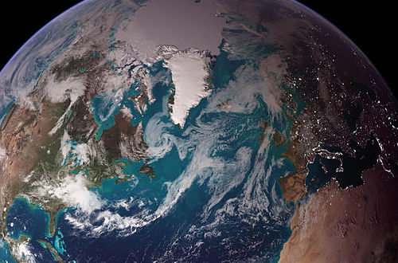

|  |
The Earth is our home and for all we know it may be the only place in the Universe which hosts life. Although it is a big place, humans have now come to dominate the planet to such an extent that we are changing it in fundamental ways. It is therefore very important that young people understand and treasure the Earth, since without a commitment to forego some of the damaging lifestyle choices which have become commonplace in the developed world the outlook for the living world is bleak. |